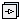
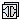

This package contains blocks that transform a clock signal, by sub-, super-, and shift-sampling a clock. For an introduction to clocks see UsersGuide.Clocks.
Extends from Modelica.Icons.Package (Icon for standard packages).
| Name | Description |
|---|---|
|  Clocks | Library of blocks that generate clocks |
| Library of blocks that sub-, super-, shift-sample clock signals | |
|  Interfaces | Library of connectors and partial blocks with clock signals |